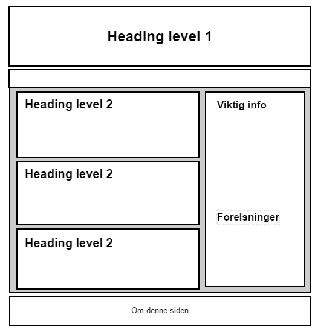

Om denne siden
Når jeg begynte med denne siden ønsket jeg en oversiktlig og ren side hvor man lett skjønner hvor man finner det man leter etter. Fonten på siden ønsket at skulle være enkel og med god lesbarhet. Jeg søkte litt rundt og så på ulike nettsteder med tanke på hvor de plasserte ulike seksjoner, og fikk dermed noen tanker om hvordan jeg ville strukturere min egen side.

Jeg begynte med å skissere opp siden på papir, før jeg prøvde meg på et Wireframe-program. På det ene bildet vises en enkel wireframe av hvordan jeg så for meg forsiden i begynnelsen. Det andre bildet viser en enkelt skisse av hvordan jeg så for meg at en artikkelside vil se ut. Jeg ønsket å ha et navigasjonsfelt under headeren slik at jeg kunne bruke området under til å vise nye artikler og et felt med viktig informasjon. Hovedtanken var at artikkelfeltene skulle ta to tredjedeler av siden, mens informasjonsseksjonen skulle ta en tredjedel. Når jeg søkte litt rundt på ulike nettsteder fant jeg ut at hovedinnholdet ofte ligger til venstre, mens tilleggsinformasjon ofte finnes på høyre side.
På dette nettstedet ønsket jeg å teste ut Grid, og tenkte det ville passe være en god måte å strukturere siden på. Spesielt til hovedinnholdet slik jeg så det for meg. Ved å sette seksjonene i et slikt rutenett vil siden kunne tilpasse seg innholdet, og samtidig se ryddig og fin ut. En ulempe med Grid er at det ikke fungerer i alle nettesere enda siden det er ganske nytt. Chrome og Opera støtter det, men i min Firefox-nettleser ville den dessverre ikke fungere.
Når det gjelder navigasjonen tenkte jeg at et ikon som en hjemknapp ville passe bra i stedet for å skrive hjem. Det er også et logisk ikon som de fleste vil forstå. Jeg ønsket også å lage en nedtrekksmeny for artiklene slik at man enkelt kan se hvilke artikler som finnes uansett hvor man befinner seg på nettstedet.
Inspirasjon
| Beskrivelse | URL |
|---|---|
| VG har en god struktur på siden, med logiske plasseringer. Hovedinnhold til venstre mens tilleggsinformasjon til høyre som tar mindre plass | vg.no |
| Tek har en lignende struktur som VG, hovedartikler til venstre med størst plass, mens anbefalinger, topplister osv. har en smalere plass til høyre | tek.no |